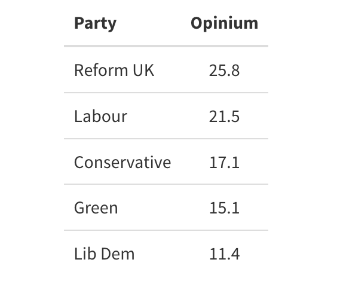

Published March 21, 2026
Opinium surveyed 2,014 UK adults aged 18+ online between 15th and 17th April 2026, weighted to be "nationally and politically representative." The poll is commissioned by The Observer — one of Opinium's longest-standing relationships in political polling — and was conducted across three fieldwork days rather than the single-day approach used by Find Out Now or the month-long MRP window used by More in Common.
Several methodological features distinguish Opinium from other houses examined in this series:
The raw vs headline distinction. Opinium publishes two voting intention figures in every release: the raw V003 question (asked of all who say they might vote, including don't-knows) and the HeadlineVI figure (a filtered subset of respondents who give a definite voting intention). The raw base is 1,791 respondents; the headline base is 1,450. The 341 respondents who fall out between raw and headline are those who said "don't know" or "would not vote" — Opinium does not redistribute these respondents through a squeeze question or statistical modelling. They are simply excluded. This is simpler than FON's squeeze approach and considerably simpler than More in Common's double-don't-know imputation model. Its implication is that Opinium's headline figures are built on a harder base of committed voters, which in the current political environment disproportionately benefits Reform (whose voters have the lowest don't-know rate) and disadvantages parties whose support is softer and more tentative.
Broad age bands. Opinium uses four age groups (18-34, 35-49, 50-64, 65+) rather than the six or seven used by other houses. The 18-34 band is analytically cruder than FON's 18-24 and 25-34 split — it combines two generations with meaningfully different political profiles. Green support among 18-24 year olds is consistently 10-15 points higher than among 25-34 year olds in finer-grained data. Opinium's 18-34 figure masks this gradient.
UK rather than GB. The sample covers the UK including Northern Ireland (n=38 unweighted). Northern Ireland respondents are weighted to zero in the headline VI since the party options don't map onto NI's party system. This is correctly handled but means the weighted sample is slightly smaller than the raw sample, and any demographic figures from the tables that include NI respondents will differ marginally from a GB-only figure.
Weighting methodology not fully disclosed. Unlike YouGov, which publishes a full weighting table including political attention, education interlocked with age and gender, and EU referendum recalled vote, Opinium's tables state only "nationally and politically representative criteria." This is BPC-compliant but analytically opaque. We cannot determine, for instance, whether Opinium applies a political attention weight (as YouGov does, which tends to reduce Reform's figures) or weights by education level (as More in Common does). This limits our ability to explain house-effect differences between Opinium and other pollsters.

The headline that demands immediate analytical attention is Labour at 21.5%. This is 5.5 points higher than Find Out Now's 16.0% from the same week, and 5.5 points higher than YouGov's 16% from April 6-7. That is not a margin of error. It is a house effect of significant magnitude.
What explains it? Three factors, in descending order of analytical confidence.
First: Opinium's raw-to-headline filter works differently from FON's. FON's squeeze question and don't-know modelling redistributes uncertain voters toward parties based on demographic priors. Opinium simply excludes don't-knows from the headline. Among 2024 Labour voters, the don't-know rate is relatively low (those who are uncertain tend to have left already), so Labour's headline figure benefits from the simpler filter. FON's modelling, by contrast, effectively uses past-vote demographics to redistribute uncertain 2024 Labour voters — some of whom the model assigns to other parties.
Second: Opinium's 2024 vote retention for Labour is 53.0% in this poll, against FON's 48.4% in the same week. Both numbers are historically low, but the 4.6-point difference in retention produces the majority of the headline VI gap. Opinium shows more Labour 2024 voters staying with Labour than FON does — whether because the populations differ, the fieldwork dates differ slightly (April 15-17 vs April 8), or because the methodological treatment of uncertain voters differs.
Third: Opinium historically runs higher for Labour than other houses. This is an established house effect, the mirror image of the house effect that causes Opinium to run higher for Reform than YouGov. Both effects are real and consistent across multiple polls. Analysts working from a single house's figures should always apply a mental correction for known house effects.
The Green figure at 15.1% is also notable — significantly below FON's 19.7% from the previous week. Opinium's broader 18-34 age band is part of the explanation: it cannot capture the very high Green support (38-42%) among 18-24 year olds that finer-grained data shows. The 35-49 band in Opinium is also a broader category that dilutes the Green signal. Green's true national support is somewhere between Opinium's 15.1% and FON's 19.7% — the methodological consensus across all houses this week suggests the Greens are in the high teens, with the spread across houses reflecting genuine uncertainty about how to weight and model their disproportionately young, potentially lower-turnout voter base.
The gap between Opinium's raw V003 figure and their headline is the most analytically revealing feature of every Opinium release, and it is consistently underreported.
Raw (before filter): Reform 20.9%, Labour 17.4%, Conservative 13.9%, Green 12.2%, Lib Dem 9.3%.
Headline (after filter): Reform 25.8%, Labour 21.5%, Conservative 17.1%, Green 15.1%, Lib Dem 11.4%.
The filter uplift — the percentage points each party gains when don't-knows and won't-votes are excluded — tells you about the relative certainty of each party's supporters. Reform's 4.9-point uplift is the largest in absolute terms: their voters know they are voting Reform and say so without hesitation. Labour's 4.1-point uplift is also substantial. Green's 2.9-point uplift is the smallest of the main parties, which is consistent with what we know from FON's turnout data: Green supporters are more likely to express uncertainty about whether they will actually vote. The 16.5% don't-know rate in the raw question — the largest of any single response category — is the headline that no publication will lead with, but it is arguably more important than the party figures themselves. One in six of all respondents with a stated intention to vote cannot or will not say which party they intend to support.
Opinium's 18-34 band shows: Green 27.0%, Reform 18.6%, Labour 29.3%, Conservative 11.1%. Reform rises to 33.2% among 65+, Green falls to 5.6%.
The broad age bands give a consistent directional picture but mask important within-band variation that finer-grained polling captures. The most important missing data point is the 18-24 sub-group. In FON's April 8th poll, Green were at 38.6% among 18-29 year olds; Labour were at 17.1%. Opinium's 18-34 figure of 27.0% Green and 29.3% Labour suggests a different picture — but this is largely because the 18-34 band includes the 25-34 group, among whom Labour polls substantially higher and Green substantially lower than among 18-24 year olds. Opinium's age crossbreak should be read as approximations of the gradient direction rather than precise estimates of support within any specific young cohort.
The Conservative age pattern is the most consistent finding across all houses this week: 11.1% among 18-34, rising steadily to 27.0% among 65+. The gradient (+15.9 points from youngest to oldest) is steeper than any previous point in Conservative electoral history where we have comparable data, reflecting both the loss of younger Conservative voters to Reform and the retention of older ones who have nowhere else politically to go.
Net approval ratings from this poll: Starmer -38.7, Farage -20.7, Polanski -11.2, Davey -5.0, Badenoch -10.6.
Starmer's -38.7 net — 58.3% disapprove, 19.6% approve — is the worst rating for a sitting Prime Minister in any Opinium poll since records began with regular political tracking. For context: at his lowest point, Boris Johnson's net approval in Opinium polling reached approximately -35%. Rishi Sunak's trough was around -42% in late 2023. Starmer is now in that territory less than two years into his premiership.
The breakdown is analytically precise about where the disapproval is concentrated. Strongly disapprove at 40.3% — two in five of all respondents — is the signature of active hostility rather than mere dissatisfaction. This is the figure that distinguishes a leader who has lost the public from one who has merely failed to inspire them. Starmer is in the former category.
The Iran war approval figures add a further dimension. On handling the military action in Iran, Starmer's net on the Iran-specific question is -4.5 (32.7% approve, 37.2% disapprove) — much narrower than his general job approval. This is analytically significant: it suggests that Starmer's Iran response is not itself driving his overall unpopularity, but is also failing to provide the kind of wartime rally effect that historically benefits governing leaders during international crises. The last time a major external crisis provided a governing-party boost was Ukraine in early 2022, when Boris Johnson saw brief approval gains before they were wiped out by the partygate revelations. Starmer has not achieved even that temporary boost.
Farage's general net of -20.7 is better than most would assume for the leader of an insurgent party. He is net positive among Reform 2024 voters (+65.6 net approve) and broadly net negative everywhere else, but the aggregate figure reflects a population that is divided rather than uniformly hostile. His Iran-specific rating is net -18.2 — worse than his general rating — suggesting his response to the conflict has been poorly received even by some who generally approve of him.
Most unexpectedly: Badenoch's general net of -10.6 is better than Starmer's (-38.7) and only slightly worse than Farage's (-20.7). At this stage in her leadership this is notable: she is a leader in opposition with low recognition whose disapprovers are less vehement than Starmer's. This relatively soft negative may be as much a reflection of low public engagement with the Conservative Party as genuine approval, but it preserves optionality for a party that needs time and a changed political context to recover.
Opinium asked three distinct EU-related questions in this poll, making it uniquely valuable for understanding the Brexit landscape in 2026.
US vs EU alignment: When forced to choose, 55.1% prefer greater EU cooperation and less US cooperation, while 18.2% prefer the reverse. The 3-to-1 margin for EU over US alignment is the starkest finding in this entire poll and its political implications are immediate: in the context of the Trump administration's explicit support for Orbán's Hungary and its general hostility to European institutions, British public opinion has moved toward Europe, not toward Washington. Even among Conservative 2024 voters — 51.3% prefer EU, 23.1% prefer US — the EU option wins. Only Reform 2024 voters show a different pattern, but even among them the pro-EU figure would be worth examining in the full crossbreaks.
Brexit views: 33.9% want to rejoin the EU. 22.2% want to remain outside but negotiate a closer relationship. 17.4% want to keep the current relationship. 11.9% want a more distant relationship. Net "rejoin or closer": 56.1%. Net "remain outside": 51.5%. These two nets are not mutually exclusive (the overlap is "remain outside but closer"), and together they describe an electorate that has broadly converged on wanting a closer relationship with the EU than exists currently, while remaining divided on whether that means rejoining or merely renegotiating.
EU single market alignment proposal: Asked about the government's proposal to adopt some future EU single market rules without a full parliamentary vote, 39.7% net approve, 23.6% net disapprove. This is a 16-point net positive — substantially more popular than the government itself. It suggests that specific EU alignment measures, when presented on their merits with both sides of the argument given, command majority support even in a sample that includes many Leave voters.
These three findings, read together, constitute a coherent picture: British public opinion in April 2026 is pro-EU alignment, cautious about US economic power, and prepared to accept incremental EU convergence even without rejoining. This is the context in which Labour's hesitancy on EU policy should be understood — not as a reflection of public opinion, but as a legacy constraint from a pre-2024 political calculation that the public has largely moved past.
The spending preferences question produces one finding that stands out from every other: welfare and benefits is the only category where more people think the government spends too much (40.2%) than too little (24.7%). Net "too much on welfare": +15.5 points. Every other category tested — NHS (+48.8 net too little), defence (+41.3 net too little), education (+37.1 net too little), infrastructure (+35.4 net too little), even pensions (+30.7 net too little) — shows a majority or plurality wanting more spending.
The welfare outlier is not surprising — it has been consistently documented across decades of British social attitudes data — but its magnitude is worth noting in context. Defence tops the "too little" table at +41.3, driven by the Iran conflict and debates about European security spending. The NHS remains the single issue with the widest consensus for more spending. The gap between NHS sentiment (+48.8) and welfare sentiment (-15.5) describes the core challenge of fiscal politics in Britain: the public wants more NHS spending funded from somewhere, and "welfare benefits" remains the category they are most willing to cut, even in a cost-of-living crisis where benefit levels are under more scrutiny than they have been in years.
The government's proposal to restrict jury trials — keeping them only for the most serious crimes while routing mid-level cases to judges or magistrates — is opposed by more people (33.5%) than support it (29.6%), with 36.9% neither or don't know. The net opposition of -4.0 points is relatively narrow but directionally consistent: the public is not enthusiastic about restricting a right they associate with fairness and protection from state power. Conservative 2024 voters oppose it most strongly (net -14.5). Reform voters are also net opposed. Labour voters are the most supportive. This is a policy where the government is ahead of its own voter base and behind the electorate as a whole — a combination that rarely produces durable political momentum.
The news awareness question is analytically valuable as a calibration tool. The most-heard story of the week was Trump and Pope Leo publicly disagreeing over the Iran war (72.7% heard at least a little), followed by the Middle East conflict (72.7%) — both unsurprisingly given the Iran war context. The Hungarian election result — Magyar beating Orbán — was heard by 60.8% of respondents, a high figure for a foreign election result and a reflection of the coverage it received. Rory McIlroy's Masters victory was heard by 57.1%, broadly comparable to the Hungarian election, which says something about the relative salience of sport and geopolitics in British media consumption.
The IMF forecast that the Iranian energy shock would hit Britain harder than other advanced economies was heard by 60.6% — a high figure suggesting genuine public awareness of the economic consequences of the conflict. This is the contextual backdrop against which Starmer's Iran-specific approval ratings should be read: the public is informed enough about the economic risks to have formed views, and those views are not flattering to the government.
Opinium's Labour figure (21.5%) is the highest of any house this week and reflects a genuine house effect. The 53.0% Labour retention rate, the raw-to-headline filter mechanics, and Opinium's consistent historical tendency to run Labour higher than other houses together explain the gap with FON (16.0%) and YouGov (16%). The true figure is likely somewhere between them.
The raw-to-headline gap gives Reform the largest absolute filter uplift (+4.9 points). Their supporters are the most certain about their voting intention. This is a sign of a consolidated, committed base rather than growing soft support — consistent with the retention data showing Reform at 82.2% of their 2024 voters.
Starmer's -38.7 net approval is a historically severe rating for a sitting Prime Minister. The 40.3% who strongly disapprove represent active hostility, not mere dissatisfaction. His Iran-specific rating (-4.5) is better than his general rating, but the absence of any wartime approval boost suggests the geopolitical context is not helping him recover.
The EU alignment findings are the most consequential policy data in this poll. 55.1% prefer EU over US alignment. 56.1% want to rejoin or have a closer relationship with the EU. 39.7% net approve of the EU single market alignment proposal. The public is substantially ahead of the government on EU policy.
Welfare spending is the one area where "too much" outscores "too little." In a political environment where every other spending category shows majority support for more, welfare benefits remains the public's preferred area for restraint. This shapes the fiscal politics of any government trying to fund NHS expansion and defence increases simultaneously.
The news agenda this week was unusually dominated by international events. Iran, Hungary, the Middle East, Trump. The local election campaigns — which will determine the political reality of May 2026 — were the least-heard story in the news awareness question. If local election results differ significantly from what the national polling suggests, the explanation will partly be that the national political conversation was focused elsewhere while the local contests were being decided.
-----------------------------
Analysis based on Opinium / Observer polling. Fieldwork 15th–17th April 2026. N=2,014 UK adults. Headline VI base N=1,450 (those giving a voting intention). Commissioned by The Observer. Opinium is a member of the British Polling Council.